Using the C/C++ Debugger
The MoSync SDK includes a powerful debugger that makes it easy to step through C/C++ code running on the MoRE Emulator and get an overview of the state of your program as each statement executes.
About the Debugger
Our C/C++ debugger is a reimplementation of the GNU debugger. (For more information see: http://www.gnu.org/software/gdb/.) The debugger has been customized for the MoSync SDK and is fully integrated with MoSync SDK's Eclipse-based IDE. The debugger works with code executing in the MoRE Emulator and allows you to:
- Break program execution at any time
- Execute a single line of code
- Step into/out of functions
- Get a stack trace at every location of a program
- Hover over any macro/variable to see its content at time of execution
- Enable and disable breakpoints
- View variable content in tree-view
- Instantly see variable updates
- Add any C/C++ custom expression
- Inspect global variables by adding them as watch expressions
Starting the Debugger
Before you start the debugger, check that you have a Debug build configuration available, as follows:
- Select your project in the Project Explorer.
- Go to Project > Properties > MoSync Project > Build Configurations.
- Tick the Activate Configurations box.
You should now see the available build configurations. The build configuration called "Debug" is the build configuration that's used by default when you start the emulator in debugging mode. If you need to, you can edit this build configuration and/or create a new one: see Creating a Debug Build Configuration.
- Click OK to close the Properties window.
- Start the debugger by clicking the Debug 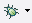 button on the main toolbar.
The emulator will open and you application will execute in debug mode.
Pausing Execution
To break the execution of your program while it is running, click the Pause button: 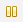
The application will enter a suspended state and you can inspect variables and see the stack-trace.
To stop the debugging session, click the Stop button: 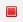
Note: if you happen to pause execution while inside an external library (such as the ones bundled with MoSync), you will not be able to see any source code: external libraries are not provided in the MoSync package.
Setting Breakpoints
To set a breakpoint, do one of the following:
- Right-click in the code view border where you want the breakpoint, then select Toggle Breakpoint from the pop-up menu.
- Double-click in the code view border.
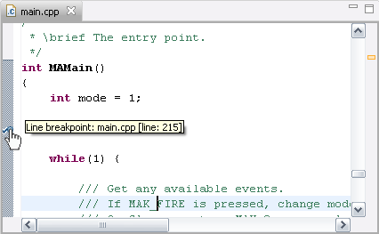
Now click the Debug button. When the program reaches the breakpoint, the program will be suspended and you will be able to debug the application from there - inspecting variables, stepping line-by-line, setting new breakpoints, and so on.
Stepping Through Code
When execution reaches a breakpoint or you pause execution manually, you can step through the code line-by-line. This helps you see what code paths the application executes along and what values are assigned to variables after an expression has been evaluated. There are three buttons to help you step through the code:
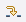 Step Into executes a line. If the line is a call to a function, the debugger steps into it.
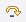 Step Over executes a line. If the line is a call to a function, the debugger executes the function call and breaks after it has returned .
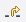 Step Return continues the execution until the execution has returned from the current function.
Inspecting Local Variables
When execution reaches a breakpoint or you pause execution manually, you can inspect the current content of variables. All the variables in the local scope are visible, including static variables, local variables, and arguments to functions. The content of structures and arrays can be expanded by pressing the + sign next to them.
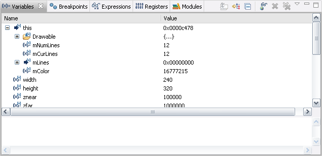
Inspecting Global Variables with Watch Expressions
To inspect a global variable you must add it as a watch expression. There are two ways to do this:
- Right-click in the Expressions tab, select Add Watch Expression, type the name of a global variable, and click OK:
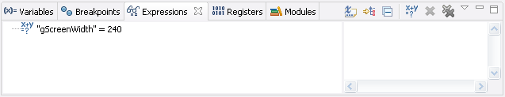
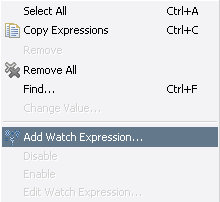
Right-click the name of a global variable in the editor, select Add Watch Expression , and click OK.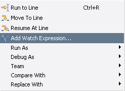
Creating a Debug Build Configuration
To be able to debug your program you need to have a debug build configuration with debugger-compatible build settings (for instance, all optimizations turned off).
This also applies to libraries, which is why special unoptimized debugging versions of the libraries need to be linked against instead (our debugging libraries all end with a capital "D").
A default debug build configuration will be created whenever you create a new project, but if you don't have one or you want to create another one, do the following:
- Goto Project > Properties > MoSync Project > Build Configurations
- Add a new build configuration or Duplicate an existing one.
- Click Edit and give the new build configuration a suitable name.
- Go to Build Settings > Build Configuration > Configuration.
- In the Configuration list box, select the build configuration you just created.
- Select the Paths and Files tab and set Additional Libraries to the debug ones (MAUtilD.lib for example).
- Select the Compiler Flags tab and turn off all optimizations by adding -O0 (and make sure that no other optimizations are turned on, i.e. no other -O switches).
- Finish by clicking OK.
To use your new Debug build configuration:
- Press the small down-arrow to the right of the Debug button and choose Debug Configurations.
- Select the project you want to use the new debug build configuration with.
- In the Configuration group, tick the Automatically switch to this configuration before debugging box.
- Select your new debug build configuration from the drop-down list.
Now, when you click the Debug button in your project, you new build configuration will be used to build the application ready for debugging.
Known Issues with the Debugger
- We use the MoSync debugger, but the Eclipse help system documentation still contains information about its native debugger, even though that debugger is disabled.
- Templates and namespaces aren't supported by the debugger's expression evaluator yet. If you inspect a variable using explicit namespace directives or template instances the resulting behaviour may not be what you expect.
- The C/C++ expression parser isn't completely tested yet, but it should support the most common expressions.
- Note that functions cannot be called from expressions (that includes overloaded operators).
- Instruction stepping mode isn't fully supported.
- The menu options Run to line, Resume at line and Move to line are not implemented yet.